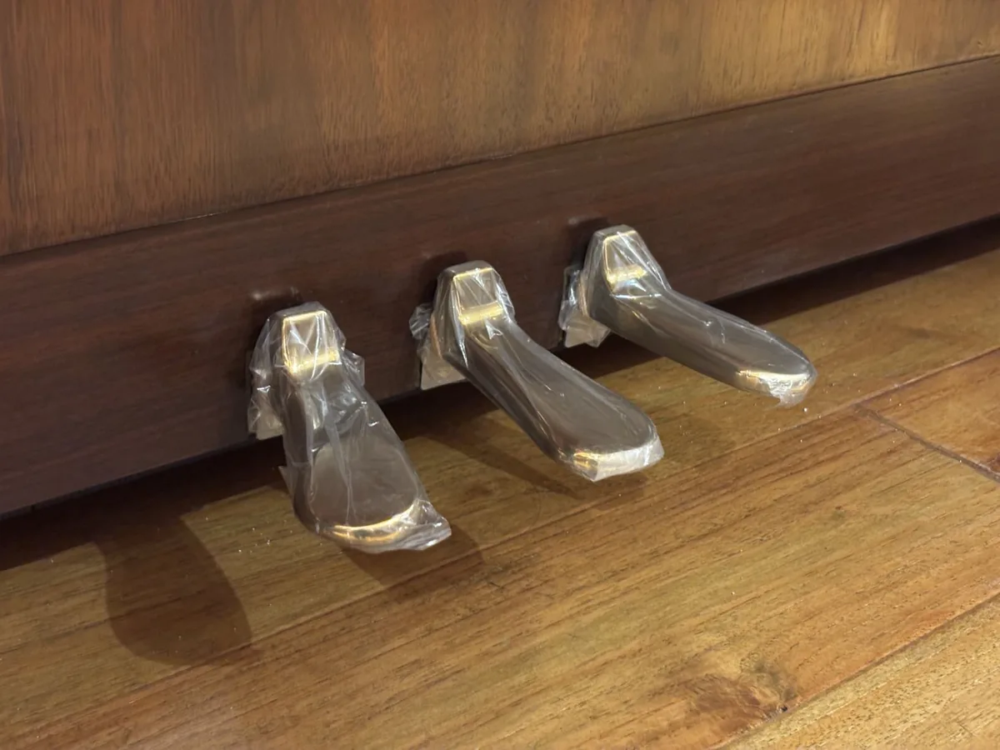
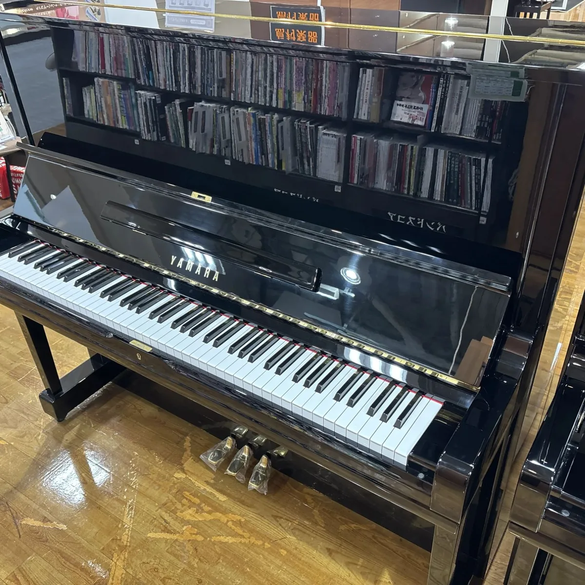
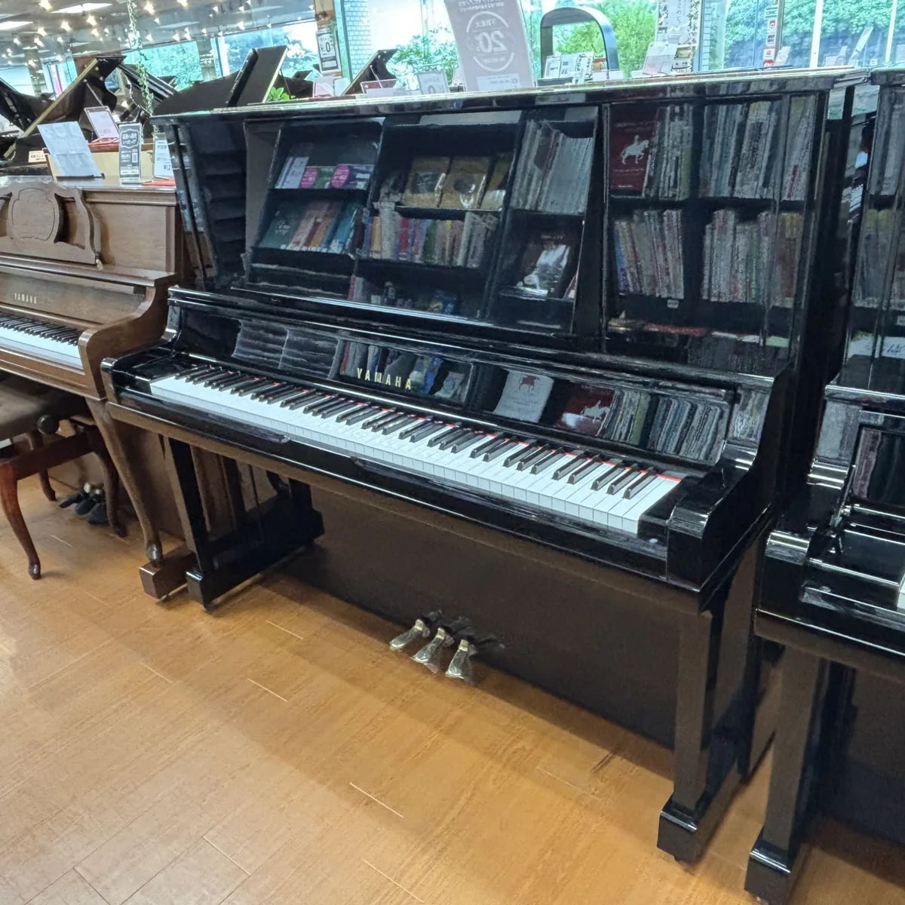
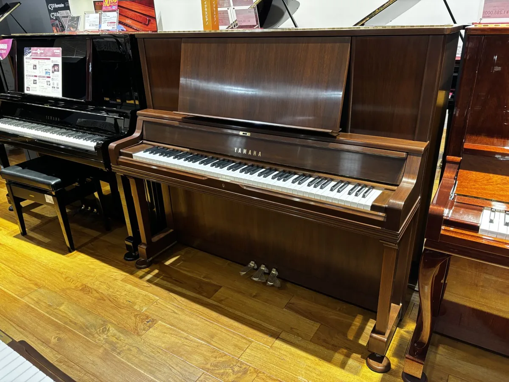
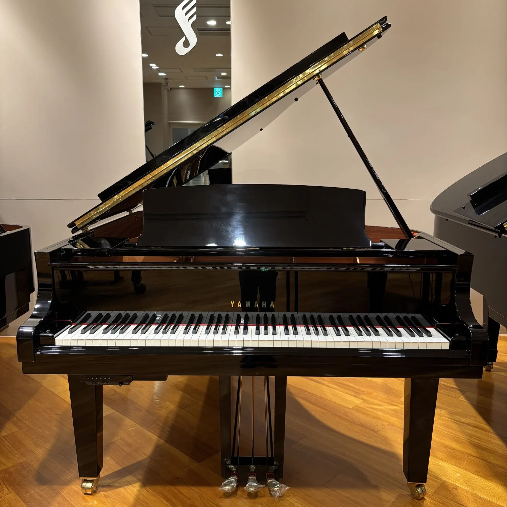
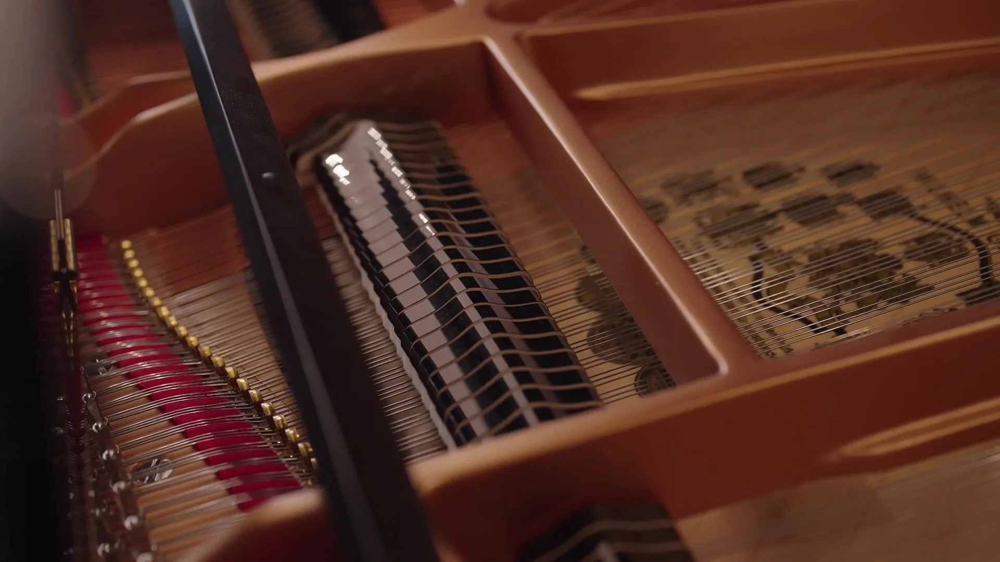
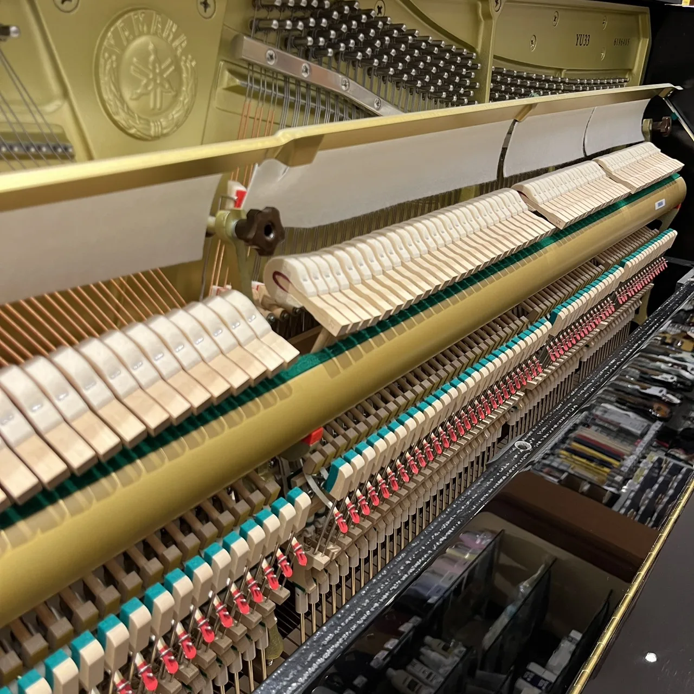
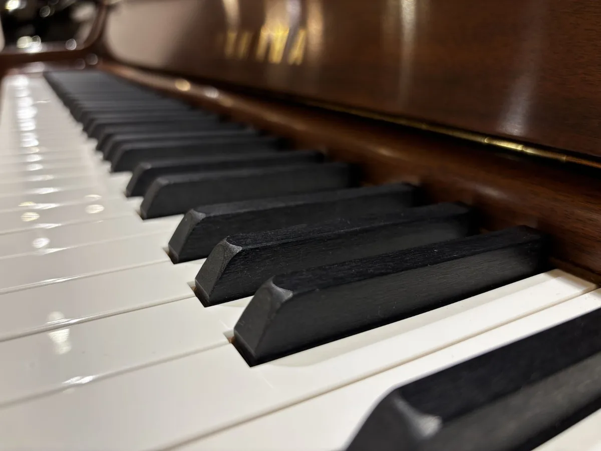

Every Yamaha upright and grand you are likely to meet as a Japanese import, from 1970 to today: what each model is, what changed from one to the next, and which one suits your home.
Hand-picked in Japan · Checked in Melbourne
Contents
Inside this guidepage by page
Signature Pianos · The Yamaha buyer's guide
A word before you start
Why Japanand why Yamaha
Most of the pianos in our showroom were made in Japan and spent years in Japanese homes before they came to us.
Japan fell in love with the piano in the 1970s and 1980s. By the late 1990s, a study of the industry estimated, Japanese homes owned six to seven million of them. Many were bought for children's lessons and kept in family living rooms for decades. Condition still varies from one piano to the next, which is why we check every one.
I choose each piano in Japan myself, have it photographed there before it ships, and bring it straight to Melbourne, where we check it again in our Mount Waverley workshop before it goes on the showroom floor. With no chain of dealers in between, you pay for the piano, not the markup.
This guide is what I would tell you across the showroom: which Yamaha is which, what changed from one model to the next, and how to choose the right one for the person who will play it and the room it will live in. Come and play any of them. That is still the best test there is.
Most people choose a piano by how it looks. The better way is to answer four questions first. The right model usually falls out of the answers.
1 · Who will play it?
A beginner, a student, or you
A child starting lessons needs an instrument that holds its tuning and has an even, responsive touch. A well-kept 121 cm upright does that. A student working through the grades, or an adult coming back to the piano, will hear and feel the extra string length and soundboard of a 131 cm upright. Serious students and teachers often end up at a grand.
2 · Where will it live?
The room decides the size
An upright wants an inside wall, away from windows, heaters and air-conditioning vents. It needs about 1.6 m of wall and room in front for the stool. A grand needs its full length plus about 60 cm behind the keys for the stool, and sounds best in a room larger than it is. Measure doorways and stairs as well as the room.
3 · Does it need to be quiet?
Neighbours, babies, late practice
Almost every Japanese upright has a middle pedal that drops a strip of felt in front of the strings and makes the piano much quieter. If that is not quiet enough, a Yamaha Silent piano lets you play through headphones and switch back to the acoustic sound whenever you like. See page .
4 · What is the budget?
Age, size and condition
Three things set the price of a pre-loved Yamaha: the era it was built in, its size, and the condition it is in today. Two pianos of the same model can be far apart. Page gives the ranges we see, so you can match a model to what you want to spend before you fall for one.
A quick match
If this is you
Start with
Pages
A child starting lessons, or a smaller room
A 121 cm upright: U1A, U10A, U100, YU11, YUS1
,
A student working through the grades
A 131 cm upright: U3, U30A, UX3, YU33, YUS3
,
An advanced student or teacher
A top upright (UX50A, YU50, YUS5) or a grand (G3, C3)
,
An apartment, or practice late at night
A Silent upright: YU11 or YU33 with SG2 or SH2, YUS with SH
A first grand, in a room about 4 m square
GB1K, GC1, G1, C1
Signature Pianos · The Yamaha buyer's guide
Start here
Upright or grandwhat changes
Both have 88 keys, a cast-iron frame, steel strings and a spruce soundboard. The difference is which way everything faces, and what that does to the touch, the sound and the space it takes.
An upright, front view. Strings run vertically behind the keys, so the piano stands against a wall.
A grand from above. Strings run away from the player, so the piano needs floor space rather than wall.
Upright
Grand
Strings and soundboard
Vertical, facing the wall
Horizontal, facing the ceiling, with the lid to direct the sound
How the hammers return
A spring pulls each hammer back from the string
Gravity and a repetition lever reset the hammer, so a note can be repeated faster
Space
About 150–156 cm of wall, 61–66 cm deep
About 150 cm wide and 150–230 cm long, plus room to sit
Quiet options
Muffler pedal on most Japanese models; Silent systems
A hand-operated practice muffler on many Japanese grands; Silent systems on some
Who it suits
Most homes, beginners through to advanced students
Advanced students, teachers, performers, and rooms that can give it space
Signature Pianos · The Yamaha buyer's guide
Start here
Inside an uprightpart by part
Knowing the names helps when you compare models, and when a technician tells you what a piano needs.
An upright seen from the side, front to the right. The hammers are drawn in Hammer Felt, the colour our brand takes its accent from.
1Top lid · lifts to open up the sound
2Music desk · holds the score
3Fallboard · the key cover, with the maker's name
4Keys · 88 levers, 52 white and 36 black
5Key slip · the rail in front of the keys
6Action · the mechanism that turns a key press into a hammer blow, dozens of small parts for every note
7Hammers · wooden cores covered in pressed wool felt
8Dampers · felt pads that stop each string when you let go
9Strings · about 220 of them, one to three per note
10Tuning pins and pin block · the pins a tuner turns, held in layers of hardwood
11Iron frame · cast iron that holds the combined pull of the strings, about 18 to 20 tonnes
12Bridges · carry each string's vibration into the soundboard
13Soundboard · a thin spruce panel that turns vibration into sound
14Back posts · the timber frame behind it all; Yamaha's X models brace it in an X
15Pedals · three on almost every Yamaha upright
16Pedal rods · carry each pedal up to the action
17Lower panel · lifts off for the tuner
18Legs and toe blocks · carry the front of the piano
19Castors · for moving it across a room, not between rooms
Signature Pianos · The Yamaha buyer's guide
Start here
Three pedalsthree jobs
Every Yamaha upright in this guide has three pedals. The right and left ones are always the same. The middle one is the one to ask about.

Right
Sustain
Also called the damper pedal. It lifts every damper off the strings, so notes keep ringing after you let go of the keys. It is the pedal you will use most.
Left
Soft
On an upright it moves all the hammers closer to the strings, so they strike with less speed and the sound is softer. On a grand it shifts the whole action sideways instead.
Middle, on most models
Muffler
Also called the practice pedal. It lowers a strip of felt between the hammers and the strings and makes the piano much quieter. Most Japanese uprights have it, and it can be locked on for evening practice.
Middle, on some models
Sostenuto
Holds up the dampers of only the notes you are playing when you press it, so those notes ring on while the rest of the piano plays normally. Most Yamaha grands have one, though many Japanese grands from the 1970s to the mid-1980s have only two pedals. Some premium uprights have one too (marked in the model pages).
Signature Pianos · The Yamaha buyer's guide
Start here
The nameand the number
Every Yamaha has its model name and serial number stamped on the gold iron frame, at the upper right, where you can see them with the top lid open. Between them they tell you what the piano is and roughly when it was made.
Reading the model name
U
The upright line.
1 · 2 · 3 · 5
Size and grade: 1 is 121 cm, 2 is 127 cm, 3 is 131 cm, and 5 is the top 131 cm model.
F G H M A
The generation, not the grade. A U1H is not better than a U1M, just older. Yamaha used A twice: in the 1950s, and from 1982 to 1987.
10 · 100
Later generations: 10, 30 and 50 from 1987 to 1994, then 100, 300 and 500 until 1997.
Bl Wn Tk MhC
The finish: black, walnut, teak, and Chippendale cabinets (C) in mahogany, walnut or birch.
X
An X-type back post, on the higher-grade UX models (page ).
YUA YUX YUS
X-series models from 1978 to 1982.
YU · YUS1
Japanese-market names from 1997, and the higher-grade YUS from 2006.
J · Q
Codes on new pianos in Australian shops: J for Indonesian-built, Q for the Japan-built export U1 and U3.
S SX SG SH
A Silent piano. See page .
Serial number to year
Year
First serial
Year
First serial
1970
c. 1,000,000
1999
5,810,000
1972
1,340,000
2000
5,860,000
1974
1,740,000
2001
5,920,000
1976
2,150,000
2002
5,970,000
1978
2,570,000
2003
6,020,000
1980
3,030,000
2004
6,060,000
1982
3,480,000
2005
6,100,000
1984
3,890,000
2006
6,150,000
1986
4,210,000
2008
6,220,000
1988
4,560,000
2010
6,280,000
1990
4,820,000
2012
6,340,000
1992
5,080,000
2014
6,380,000
1994
5,300,000
2016
6,420,000
1996
5,460,000
2018
6,460,000
1997
5,520,000
2020
6,500,000
1998
5,590,000
2025
6,600,000
The first serial number of each year for Japan-built Yamaha pianos, uprights and grands together, from Yamaha Japan. Yamaha notes the year boundaries can shift a little, so read the result as "about". The 1970 figure is estimated from Yamaha's model records. Example: serial 3,500,000 was made in about 1982.
Signature Pianos · The Yamaha buyer's guide
Uprights · 1970 to today
Fifty yearsat a glance
Every model in the U, UX, YU and YUS families, placed by the months Yamaha built it. Read down a lane to follow one size through the decades.
Shaded: the YU and YUS names used in Japan from August 1997. Lanes group models by size. The YU10 and YU30 were higher-grade models: in 2006 their place passed to the YUS1 and YUS3, while the YU11 and YU33 took the standard line. Not shown: the 127 cm U2 (1972–1987) and UX2 (1983–1988), and the U1E and U3E, which ended in March 1970. Source: Yamaha Japan's model list.
Signature Pianos · The Yamaha buyer's guide
Uprights · 1970 to 1997
The classic Yamahamade for Japan
The pianos that made Yamaha's name: the U1 and U3 through their long run of generations, and the X-series models that sat above them. Built in Japan for Japanese homes, they are among the Yamahas most often imported to Australia today.

121 cm
The U1
U1F to U100. The compact Yamaha.
131 cm
The U3
U3F to U300. The one most people picture.
121 and 131 cm
The X series
UX, UX1, UX3 and their successors: a higher grade with an X-braced back.
131 cm
Top of the range
UX5 to UX500, and the YUA before them: agraffes, a grand-style music desk and, from the UX5, a sostenuto pedal.
Why the dimensions differ
Listings often quote today's U1 and U3 figures (153 cm wide, 228 and 246 kg) for older pianos. The older U1s are narrower and lighter (about 150 cm wide, 210–220 kg); the U3H, U3M and U3A are about 154 cm wide and 240–248 kg. The figures on these pages are for the model itself.
Signature Pianos · The Yamaha buyer's guide
Uprights · 1970 to 1997 · 121 cm
The U1the compact classic
The 121 cm Yamaha, made in one generation after another until Yamaha renamed it the YU1 for Japan in 1997. Every model here has three pedals; from the U1H on, the middle one is a muffler.
1970–1997Built
121Height, cm
150Width, cm
210–220Weight, kg
Model
Built
Serials, about
What to know
U1F
Mar 1970 – Mar 1971
1.00 – 1.20 million
Made in black, Queensland walnut or sapele.
U1G
Mar 1971 – May 1972
1.20 – 1.40 million
A short generation of about a year.
U1H
May 1972 – Sep 1980
1.40 – 3.20 million
The longest-running U1, made for eight years. Early ones came in black, walnut or sapele; black only from about serial 2,000,000.
U1M
Sep 1980 – Dec 1982
3.20 – 3.65 million
A two-year generation between the U1H and the U1A.
U1A
Dec 1982 – Mar 1987
3.65 – 4.43 million
A long-seller, in Yamaha's own words.
U10Bl
Apr 1987 – Sep 1989
4.43 – 4.80 million
The new naming: 10 for the model, Bl for black. Also made in walnut (U10Wn), teak (U10Tk) and Chippendale cabinets.
U10A
Oct 1989 – Mar 1994
4.80 – 5.30 million
Yamaha's "standard 121 cm model" of its day. Wood-grain versions were renamed W1AWn and W1ABiC.
U100
Mar 1994 – Aug 1997
5.32 – 5.55 million
The last U1 made for Japan. A factory Silent version, the U100SX, was made from 1995.
About 121 × 150 × 61 cm.
Who it suits
Beginners, home practice, and any room where 121 cm fits better than 131. A well-kept U1 from the 1980s or 1990s is a sensible first real piano for a child who has started lessons.
Good to know
The U1H and U1A are the ones most often seen. A U1H is at least 46 years old now, so its condition matters more than its model letter. Ask what has been replaced.
Signature Pianos · The Yamaha buyer's guide
Uprights · 1970 to 1997 · 131 cm
The U3the one everyone knows
The 131 cm U3 is the piano most people picture when they hear "Yamaha upright". The extra ten centimetres buy longer bass strings and a larger soundboard, and with them a fuller bass.
1970–1997Built
131Height, cm
153–154Width, cm
235–248Weight, kg
Model
Built
Serials, about
What to know
U3F
Mar 1970 – Mar 1971
1.00 – 1.20 m
The start of the 1970s.
U3G
Mar 1971 – Apr 1972
1.20 – 1.40 m
A one-year generation.
U3H
Apr 1972 – Sep 1980
1.40 – 3.20 m
The longest-running U3. About 131 × 154 × 65 cm and 248 kg.
U3M
Sep 1980 – Dec 1982
3.20 – 3.65 m
Hammers made for the model, underfelted.
U3A
Dec 1982 – Feb 1987
3.65 – 4.43 m
About 242 kg.
U30Bl
Apr 1987 – Sep 1989
4.43 – 4.75 m
The new naming, and a slightly narrower cabinet at 153 cm. Also in walnut, sapele, rosewood and Chippendale cabinets.
U30A
Oct 1989 – Mar 1994
4.75 – 5.30 m
All 88 hammers underfelted. The first factory Silent U3, the U30AS, from late 1993.
U300
Mar 1994 – Aug 1997
5.32 – 5.55 m
The last U3 made for Japan, with a slightly larger music desk. Silent versions U300S and U300SX.
A U3H photographed in Japan before import.
Who it suits
From the first lesson to the final grades. If the room allows 131 cm and the budget allows a U3, it is the one to try first.
Good to know
From the U3H on, the middle pedal is a muffler. In between the U1 and U3, Yamaha also made a 127 cm U2 (U2H, U2M and U2A, 1972 to 1987). "m" in the serial column means millions.
Signature Pianos · The Yamaha buyer's guide
Uprights · 1975 to 1997 · 131 cm, higher grade
The X seriesa braced back
From 1975 Yamaha built a higher grade alongside the U models. Behind the soundboard, the timber back posts are arranged in an X instead of running straight up and down. The X models also gained a tone escape, and later agraffes and a large grand-style music desk.
Model
Built
What to know
UX
May 1975 – Sep 1980
The first X back post. About 250 kg.
YUX
Sep 1980 – Dec 1982
The UX's successor, with a tone escape in the upper front panel and underfelted hammers.
UX3
Dec 1982 – Mar 1988
Tone escape through slits either side of the upper front panel.
UX30Bl
Apr 1988 – Mar 1990
Gains the large grand-style music desk, with a tone escape behind it.
UX30A
Apr 1990 – Mar 1994
Adds agraffes in the tenor and bass, an aliquot (extra resonating strings) in the treble, an overhanging bass bridge and walnut hammer mouldings. About 245 kg.
UX300
Mar 1994 – Aug 1997
Agraffes, large music desk with tone escape, mahogany trim. The last 131 cm X model. About 250 kg.

A UX30A photographed in Japan before import.
Who it suits
Players who want more resonance, and more of the sound coming straight towards them, than a U3 of the same years. All are 131 × 153–154 × 65 cm.
Good to know
The UX3 and UX300 have the muffler pedal in the middle, and the UX30A almost certainly does too. Japanese dealers often replace the bass strings on X models from about 1978 to 1983 when they recondition them, so ask whether that has been done.
Signature Pianos · The Yamaha buyer's guide
Uprights · 1980 to 1997 · 121 cm, higher grade
The compact Xhigher grade, 121 cm
The X-series ideas in the 121 cm size: the braced back, a tone escape, and from 1990 the large grand-style music desk, unusual on a piano this size.
Model
Built
Size and weight
What to know
YUS
Sep 1980 – Dec 1982
121 × 150 × 61 cm · 218 kg
The first 121 cm X model, with a tone escape and underfelted hammers. Not related to the YUS1 of 2006.
UX1
Dec 1982 – Mar 1988
121 × 150 × 61 cm · 219 kg
Slit tone escape, underfelted hammers. Yamaha notes it was popular with intermediate and advanced players.
UX10Bl
Apr 1988 – Mar 1990
121 × 151 × 62 cm · about 225 kg
Tone escape.
UX10A
Apr 1990 – Mar 1994
121 × 151 × 62 cm · about 230 kg
The large grand-style music desk arrives on the 121 cm size.
UX100
Mar 1994 – Aug 1997
121 × 151 × 62 cm · about 232 kg
Large music desk with tone escape and mahogany-effect trim. The last 121 cm X model.
The 121 cm X models share the U1's height.
Who it suits
A student or adult who wants the higher grade but has a room, or a budget, for 121 cm. Heard side by side with a U1 of the same year, the difference is in the sound more than the size.
Good to know
A 127 cm UX2 was also made, from 1983 to 1988. Wood-grain versions include the UX10Wn and WX1AWn. A listing that says just "YUS" is this 1980–1982 model, not a modern YUS1.
Signature Pianos · The Yamaha buyer's guide
Uprights · 1978 to 1997 · 131 cm, top of the range
Top of the rangegrand ideas
The best upright Yamaha made in each generation, borrowing from its grands: agraffes in the tenor and bass, a large music desk that lets the sound out and, from the UX5, a sostenuto pedal in the middle, with the muffler moved to a hand lever.
1978–1997Built
131Height, cm
153–156Width, cm
245–270Weight, kg
Model
Built
What to know
YUA
Sep 1978 – Dec 1982
The top upright of its time: X back post, agraffes, an aliquot in the treble, an overhanging bass bridge and a large music desk with tone escape. About 247 kg. Muffler on a hand lever. Sources disagree on the middle pedal (sostenuto, or a bass-only sustain), so try it.
UX5
Dec 1982 – Mar 1988
Sostenuto middle pedal, agraffes in the tenor and bass, and a music desk that slides forward to open a tone escape. About 249 kg.
UX50Bl
Apr 1988 – Mar 1990
The same features with the large music desk and tone escape.
UX50A
Apr 1990 – Mar 1994
A larger cabinet, 156 × 66 cm, about 265 kg. The top model of its generation.
UX500
Mar 1994 – Aug 1997
The last of the line, with mahogany side panels. About 270 kg. Followed in 1997 by the YU5 (page ).
The UX50A at about 131 × 156 × 66 cm.
Who it suits
Advanced students and teachers who want grand-piano features in an upright, and repertoire that uses the sostenuto pedal.
Good to know
Because the middle pedal is a sostenuto, the practice muffler is a hand lever rather than a pedal. Ask to be shown how it works. Wood-grain versions include the UX50WnC and UX500WnC.
Signature Pianos · The Yamaha buyer's guide
Uprights · 1997 to today
The modern Yamahaa new name
In August 1997 Yamaha stopped selling the U1 and U3 in Japan and gave its Japanese uprights new names. Outside Japan, Yamaha kept selling Japan-built U1 and U3 export models. So a modern Yamaha that comes to us from Japan is almost always a YU or a YUS.

1997 to 2001
YU1 · YU3 · YU5
The first YU models. They take over from the U100, the U300 and the X series.
2001 to 2006
YU10 · YU30 · YU50
A tone escape on every model, and more finishes, including walnut and Chippendale cabinets.
2006 to today
YU11 · YU33
The Japanese-market U1 and U3, still made at Yamaha's Kakegawa factory.
2006 to today
YUS1 · YUS3 · YUS5
The higher grade, sold in Japan and around the world, including new in Australia.
What about the U1Q and U3Q?
You will see these names in Australian shops selling new pianos. They are distributors' stock codes for the U1 and U3 made in Japan for export (the "Q" versions), as against the Indonesian-made U1J. Yamaha's own pages simply call them the U1 and U3. The Japanese-market equivalents are the YU11 and YU33.
Signature Pianos · The Yamaha buyer's guide
Uprights · 1997 to 2001 · Made for Japan
YU1 · YU3 · YU5the first YU
The YU1 and YU3 took over from the U100 and U300 in 1997. The YU5 took the place at the top of the range that the X-series uprights had held until that year.
1997–2001Built
121 · 131Height, cm
153Width, cm
228–241Weight, kg
Model
Built
Size
What sets it apart
YU1
Aug 1997 – Jul 2001
121 cm · 228 kg
The 121 cm model, following the U100. Underfelted hammers (a second layer of felt under the outer one) throughout.
YU3
Sep 1997 – Jul 2001
131 cm · 235 kg
The 131 cm model. Followed by the YU30 in 2001, and in 2006 by two models: the YU33 and the higher-grade YUS3.
YU5
Aug 1997 – Jul 2001
131 cm · 241 kg
The top model. Agraffes (brass string guides, as on a grand) in the bass and middle, grand-type hammer felt, and a pull-out music desk that opens a path for the sound.
The two heights at one scale. The extra 10 cm buys longer bass strings and a larger soundboard.
Who it suits
Anyone who wants a Japan-made Yamaha from the late 1990s with the modern YU touch. The YU1 suits a beginner or a small room; the YU3 and YU5 give a student the longer strings and bigger soundboard of a 131 cm piano.
Good to know
All three have the muffler pedal in the middle. Silent versions exist: YU1S and YU3S (1997–1999, the first generation) and YU1SZ, YU3SZ and YU5SZ (1999–2001). Serial numbers run from about 5,550,000 to 5,950,000.
Signature Pianos · The Yamaha buyer's guide
Uprights · 2001 to 2006 · Made for Japan
YU10 · YU30 · YU50the tone-escape years
From August 2001 to September 2006. The YU10 and YU30 have a tone escape (an opening in the cabinet that lets more sound out towards the player) and a soft-landing fallboard, and Japanese dealers rank all three alongside today's higher-grade YUS.
Model
Size
Weight
What sets it apart
YU10
121 × 152 × 61 cm
234 kg
Underfelted hammers, tone escape, soft-landing fallboard. The 121 cm model, and the one with the most versions (below).
YU30
131 × 152 × 65 cm
242 kg
The 131 cm model, with the same features. Limited editions: YU30LE (2002), YU30BM (2002–04) and YU30CE (2004–05), with mahogany trim or upgraded keytops.
YU50
131 × 152 × 65 cm
249 kg
The top grade: white keytops in Yamaha's "New Ivory 2", natural-wood black keys, agraffes in the middle and bass, grand-type hammers and a large music desk. The YUS5's predecessor. Its middle pedal is a muffler, not a sostenuto.
Every YU10, from Yamaha's own list
Name
Built
What it is
YU10
Aug 2001 – Sep 2006
Polished black
YU10Wn
Aug 2001 – Sep 2006
American walnut
YU10WnC
Aug 2001 – Jul 2006
Walnut in a Chippendale cabinet, with curved (cabriole) legs
YU10MhC
Aug 2001 – Sep 2006
Mahogany in a Chippendale cabinet
YU10SB
Aug 2001 – Sep 2006
Factory Silent piano (SB generation), about 238 kg. Also made as YU10Wn-SB and YU10WnC-SB.
YU10SEB
Aug 2001 – Sep 2006
"Silent Ensemble": Silent, plus recording and playback. Also in walnut, mahogany, bright ivory and white. Recalled, see below.
Who it suits
Families who want the extra features of a higher-grade Yamaha without the price of a recent YUS. The YU10 in walnut or a Chippendale cabinet also suits a room where the piano is part of the furniture.
Recall · Silent Ensemble
In 2009 Yamaha recalled its Silent Ensemble uprights (YU10SEB, YU30SEB, YU50SEB, YUS1–5SEB and related models) with serial numbers 6,095,681 to 6,264,935, because a part in the soft-pedal control could smoke or catch fire. Yamaha replaced the part free. On any SEB piano, check the serial and ask whether the part has been replaced.
Signature Pianos · The Yamaha buyer's guide
Uprights · 2006 to today · Made for Japan
YU11 · YU33the modern U1 and U3
Yamaha Japan describes the YU11 as the 121 cm model of its long-established U series. Put simply, the YU11 and YU33 are the Japanese-market U1 and U3, built at Kakegawa from September 2006 and still in production.
The same size and weight as the export U3. Five back posts, underfelted hammers with two kinds of felt in the treble, nickel-plated tuning pins and a larger music desk.
YU11W YU33W
2006 – 2010
Wood-grain (walnut) versions.
Who it suits
The YU33 is the modern equivalent of the piano Yamaha is best known for, and a sound choice for any student from the first lesson to the final grades. The YU11 does the same job where the room or the budget calls for 121 cm.
Good to know
No tone escape, lid prop or fallboard lock: those are the extras you pay for in a YUS. Yamaha itself notes that thick music books can be hard to rest on the YU11's music desk. Silent versions: SD (2006–2012), SG (2008–2012), SG2 (2013–2018), SH2 (2018–2021) and today's SH3.
Signature Pianos · The Yamaha buyer's guide
Uprights · 2006 to today · Japan and export
YUS1 · YUS3 · YUS5the higher grade
In 2006 the YUS took the YU10, YU30 and YU50's place at the top of the range. They are still made today, in Japan and for export, and are sold new in Australia.
2006–Built
121 · 131Height, cm
152Width, cm
229–253Weight, kg
Model
Size
Middle pedal
What sets it apart
YUS1
121 × 152 × 62 cm · 229 kg
Muffler
Tone escape at the lower front panel and behind the fallboard, lid prop, fallboard lock, soft-landing fallboard.
YUS3
131 × 152 × 65 cm · 247 kg
Muffler
The same features at 131 cm.
YUS5
131 × 152 × 65 cm · 253 kg
Sostenuto
Ivorite white keytops and natural-wood black keys. The music desk opens forward, with tone escapes in the upper and lower front panels.
What the extra grade buys
Yamaha has skilled technicians voice each YUS. For the current YUS1 and YUS3 it describes the hammer felt and strings as equivalent to those of its CFX concert grand. The exact materials have changed since 2006, so ask about the year of the piano in front of you.
Who it suits
Advanced students, teachers and adults who want the most from an upright before moving to a grand. The YUS5's sostenuto pedal matters for exam and recital repertoire that asks for it.
A name to watch
An unrelated Yamaha called simply "YUS" was built from 1980 to 1982, part of the X series (page ). A listing that says "YUS" without a 1, 3 or 5 is that older piano.
A YUS5 in American walnut, photographed in Japan before import. Finishes include polished black, walnut (Wn) and mahogany Chippendale (MhC).
Signature Pianos · The Yamaha buyer's guide
Uprights · Silent and hybrid
Silent pianosplay at midnight
Since 1993 Yamaha has made acoustic pianos that can go quiet. Press the middle pedal (a lever on some models) and a rail stops the hammers just short of the strings, sensors read every key, and you hear a sampled Yamaha grand through headphones. Release it and it is an ordinary acoustic piano again.
Reading the letters after the model name
Letters
Built
What it is
S
1993 – 1999
The first Silent pianos
SX · SZ
1995 – 2001
Silent, later versions
SB
2001 – 2006
Silent, on the YU10, YU30 and YU50
SD · SG
2006 – 2012
Silent, standard (SD) and higher grade (SG)
SG2
2013 – 2018
Sampled from Yamaha's CFIIIS concert grand
SH
2013 – 2018
Sampled from the CFX concert grand, recorded binaurally for headphones
SH2 · SC2
2018 – 2021
CFX and Bösendorfer Imperial samples
SH3 · SC3
2022 –
The current generation
SXG · SEB
1997 – 2008
Silent Ensemble: Silent plus recording and playback
DKV · ENST
2009 –
Disklavier: the piano plays itself
TA
2015 –
TransAcoustic: the soundboard becomes the speaker, so digital sounds come from the piano itself
Who it suits
Apartments, shared walls, shift workers, and anyone who practises when the house is asleep. Headphones also let a beginner practise without an audience.
Good to know
On a Silent piano the middle pedal usually becomes the silent control, so there is no separate muffler felt. Japanese mains power is 100 volts, so the silent unit's power supply needs to be checked or changed for Australia's 230 volts. Each generation uses newer samples, so the later the letters, the better the headphone piano generally sounds.
Recall
Silent Ensemble (SEB) pianos with serial numbers 6,095,681 to 6,264,935 were recalled by Yamaha in 2009 because a part could smoke or catch fire. See page .
Signature Pianos · The Yamaha buyer's guide
Grands · 1970 to today
Grand pianospre-loved
A grand is the step many students and teachers are working towards: an action that repeats notes faster, a soundboard that faces the room, and a lid to shape the sound. These are the Yamaha grands you are likely to meet as Japanese imports.

1971 to 1994
The G series
G1, G2, G3 and G5: Yamaha's grands for the home.
1967 to 2012
The C series
C1 to C7, and above all the C3: the conservatory grands.
2012 to today
The CX series
The C series rebuilt with what Yamaha learned from its CFX concert grand.
1993 to today
Smaller grands
A1, GB1K, GC1 and GC2, for rooms that can't take a C3.
The number is the size
Japanese dealers group grands by the number in the name: 1 is about 161 cm long, 2 is 169–173 cm, 3 is 183–186 cm, 5 is 200 cm, 6 is 212 cm and 7 is 223–227 cm. So a G3 and a C3 are close in size; the letter tells you the series.
Signature Pianos · The Yamaha buyer's guide
Grands · Size and room
Size and roommeasure twice
A grand's length is measured from the front of the keys to the tail. More length means longer strings and a larger soundboard, so more power and a fuller bass. It also means more floor.
Yamaha grands drawn to one scale, seen from above with the keyboard at the bottom. The GB1K is 146 cm wide, the C1 to C5 149 cm, and the C6 and C7 154–155 cm.
Yamaha's rule of thumb for the room
Grand
Length
Walls add up to
About a square room of
GB1K
151 cm
15.1 m
3.8 × 3.8 m
C1 · G1
161 cm
16.1 m
4.0 × 4.0 m
C2 · G2
173 cm
17.3 m
4.3 × 4.3 m
G3
183 cm
18.3 m
4.6 × 4.6 m
C3
186 cm
18.6 m
4.7 × 4.7 m
C5
200 cm
20.0 m
5.0 × 5.0 m
C7
227 cm
22.7 m
5.7 × 5.7 m
Yamaha suggests the room's walls should add up to at least ten times the piano's length, with about 60 cm behind the keys for the stool.
Floors
Grands weigh from about 260 kg to 415 kg on three legs. On a ground floor that is rarely a concern. For an upper floor or an older suspended timber floor, ask a builder or engineer first.
Getting it in
The legs and pedal lyre come off and the body travels on its side on a piano board. Measure doorways, corridors and turns, and tell us about stairs before delivery day.
Where it goes
Away from direct sun, air-conditioning vents, bathrooms and in-floor heating, with the curved side and the open lid facing into the room.
Signature Pianos · The Yamaha buyer's guide
Grands · 1971 to 1994 · Made for Japan
The G seriesthe home grand
From 1971 to 1994 the G series was Yamaha's grand for the home, sold below the C series. Japanese dealers describe its tone as softer, and the C's as brighter and clearer. In 1994 the new C1 and C2 took over the G's sizes.
1971–1994Built
161–200Length, cm
148–149Width, cm
290–340Weight, kg
Model
Built
Length · weight
What to know
G1B · G1E
Apr 1988 – Sep 1994
161 cm · 290 kg
Three pedals with sostenuto, and on Japanese examples a hand-operated practice muffler. Older G1s were made for export.
G2E
Jan 1971 – Sep 1985
169 cm · 300 kg
Usually two pedals, without sostenuto.
G2A · G2B
Sep 1985 – Sep 1990
not confirmed
The G2 had grown from 169 to 173 cm by 1990; the exact point is not confirmed.
G2E
Oct 1990 – Sep 1994
173 cm · 300 kg
Three pedals with sostenuto; hand muffler. Also made in a Chippendale cabinet.
G3E
Jan 1971 – Sep 1985
183 cm · 310–315 kg
Usually two pedals.
G3A · G3B
Sep 1985 – Sep 1990
about 183 cm
The generations between.
G3E
Oct 1990 – Sep 1994
183 cm · 315 kg
Three pedals; practice muffler as standard.
G5E
Jan 1971 – Sep 1985
200 cm · 340 kg
A 1976 example has two pedals.
G5A · G5B
Sep 1985 – Sep 1990
not confirmed
The generations between.
G5E
Oct 1990 – Sep 1994
200 cm · 340 kg
A 1991 example has three pedals.
Who it suits
A family home and a student's practice, where a grand's touch matters more than a concert sound. A G2 suits a smaller living room; a G3 wants a room of about 4.6 m square.
The same name twice
Yamaha used the letter E twice: a G2E, G3E or G5E can be from 1971–1985 or from 1990–1994, and they differ (often two pedals against three). Always date a grand by its serial number. There was no G7 made for Japan after 1967.
Signature Pianos · The Yamaha buyer's guide
Grands · 1967 to 2012 · 183–186 cm
The C3the conservatory grand
Launched in 1967, the same year as Yamaha's CF concert grand. No other Yamaha grand has been made in as many generations, and the changes between them are worth knowing.
Model
Built
What changed
C3
Jul 1967 – Dec 1970
The first C3, 183 cm long.
C3B
Jan 1971 – Sep 1979
183 cm, about 315 kg.
C3
Oct 1979 – Jan 1985
Now 186 cm and 320 kg, the size it has kept since. A 1980 example has only two pedals, so check.
C3A
Jan 1985 – Aug 1988
A 1986 example has three pedals.
C3B
Sep 1988 – Sep 1990
A short generation.
C3E
Oct 1990 – Sep 1994
Revised materials, according to Japanese dealers.
C3
Oct 1994 – Sep 1999
Launched alongside the new C1, C2 and C6.
C3L
Oct 1999 – Jun 2007
Yamaha revised the bass strings, stiffened the treble hammer shanks and set the long bridge on a maple and mahogany base, as on its concert grand. Adds a lid-prop stopper, a soft-close fallboard and "New Ivory" keytops.
C3LA
Oct 2003 – Jun 2007
Soundboard spruce and string wire from the same sources as Yamaha's S series.
C3
Jun 2007 – Aug 2012
Ivorite keytops, the curved music desk of the S series, three lid-prop positions, a key lock.
C3A
Jun 2007 – May 2008
The Artistic Edition, made for a year, with S-grade soundboard and wire and hand-wound bass strings.
C3XA
Sep 2008 – Jul 2012
Soundboard, ribs and back posts re-specified, and new string wire. Followed by the C3X.
Who it suits
Serious students, teachers and performers, and homes with a room of about 4.7 m square or more. From 1979 the C3 is 186 × 149 × 101 cm and about 320 kg.
Letters used twice
C3B means 1971–1979 or 1988–1990. C3A means 1985–1988 or 2007–2008. A plain C3 was sold in four separate periods. The serial number is the only reliable way to date one.
Signature Pianos · The Yamaha buyer's guide
Grands · 1967 to 2012 · The other C sizes
C1 to C7one family, five sizes
The C3's design in every size from 161 to 227 cm. The suffixes follow the same pattern as the C3, so a C5L or C7LA belongs to the same generation as a C3L or C3LA.
Size
Generations
Length × width
Weight
What to know
C1
C1 1994–99 · C1L 1999–2007 · C1 2007–12
161 × 149 cm
290 kg
The smallest C, from 1994. The C1L has acrylic keytops, a step below the C3L's.
The semi-concert grand. 1980s examples measure about 223 cm.
C3 or C5?
Same width and height. The C5 is 14 cm longer and about 30 kg heavier, with a longer bass. If the room is 5 m square or more, it is worth playing both.
G or C?
Yamaha priced the C above the G. In 1990 to 1994 a new G3E listed at ¥1,050,000 in Japan and a C3E at ¥1,300,000; a G5E at ¥1,350,000 and a C5E at ¥1,700,000.

Signature Pianos · The Yamaha buyer's guide
Grands · 2012 to today
The CX seriessince 2012
In October 2012 the CX series replaced the C series. Yamaha describes it as the C rebuilt with what it learned developing the CFX, its concert grand.
Model
Length × width
Weight
C1X
161 × 149 cm
290 kg
C2X
173 × 149 cm
305 kg
C3X
186 × 149 cm
320 kg
C5X
200 × 149 cm
350 kg
C6X
212 × 154 cm
405 kg
C7X
227 × 155 cm
415 kg
What changed, in Yamaha's words
Hammers use the same felt as the CFX, and the strings use new wire.
On the C3X and larger, a back frame about 20% thicker, and the soundboard, ribs and bridge crowned by the CFX's method.
A cabinet styled on the CF series, with a sturdier pedal box.
Ivorite keytops, three lid-prop positions with a safety stopper, and a key lock.
A pre-loved 2016 C3X with a Silent system.
Alongside the CX
C1TD and C3TD (from 2012): the older C cabinet, priced below the CX. C3X espressivo (2021, revised 2026): a higher-grade C3X. SX series (S3X from 2017, S6X from 2018): thicker rim laminations and a CFX-type European spruce soundboard.
Who it suits
Performers, teachers and advanced students who want a recent Yamaha grand, and buyers who would otherwise buy new.
Silent grands
Silent versions add letters after the name, for example C3X-SH3. SH is the 2013 generation, SH2 2018 and SH3 2022. See page for how Silent pianos work.
Signature Pianos · The Yamaha buyer's guide
Grands · 1993 to today · Under 175 cm
Smaller grandsfor smaller rooms
Grands for rooms that cannot take a C3, and budgets that cannot either. The differences between them are mostly in where they were made and what the middle pedal does.
Model
Built
Length · weight
What to know
A1 · A1R · A1L
Oct 1993 – Feb 2011
149 cm · 269 kg
Japan's smallest Yamaha grand of its time, with a sostenuto pedal. Yamaha described it as fitting a room of about 10 m².
Z1 · Z1B
Nov 2003 – Feb 2007
151 cm · 273 kg
Two pedals only, no sostenuto.
GB1K
2009 – 2025
151 cm · 261 kg
Made in Indonesia. On the Australian model the middle pedal sustains only the bass; the Japanese model has a sostenuto. Production ended when Yamaha Indonesia stopped making pianos in December 2025.
GC1
export model
161 cm · 285–290 kg
Made in Japan, with a simpler cabinet and synthetic keytops than the C1. The 2009 update added a sostenuto and a soft-close fallboard. Sold in Japan only as a Silent piano (GC1S, GC1SN, GC1SG).
GC2
2009 –
173 cm · 305 kg
The size of the C2 at a lower price.
GCB · GC1
2026 –
151 cm · 275 kg (GCB)
A new GC series made at Kakegawa, sharing the CX's basic design. Too new to be found pre-loved yet.
Who it suits
A first grand for a home that wants one, in a room of about 4 m square. Play a good 131 cm upright as well before you decide: at this length the two are closer than most people expect.
Middle pedals, again
Ask what the middle pedal does on the piano in front of you: sostenuto, bass sustain, or nothing on a two-pedal model. It depends on the model, the market it was made for and the year.
Signature Pianos · The Yamaha buyer's guide
Before you buy
What to budgetby era and size
Indicative prices for pre-loved Yamahas in Victoria and New South Wales, September 2026. Each piano is priced on its own condition, so use these to match a model to a budget, then come and look at the piano.
Uprights
Models
Built
About
U1H · U1M · U1A
1972–1987
$4,000 – $5,800
U10Bl · U10A · U100
1987–1997
$5,500 – $6,700
U3H · U3M · U3A
1972–1987
$4,500 – $6,700
U30Bl · U30A · U300
1987–1997
$5,800 – $7,900
X series, 121 and 131 cm
1975–1997
$5,000 – $10,000
YUA · UX5 to UX500
1978–1997
$6,500 – $13,500
YU1 · YU3 · YU5
1997–2001
$7,000 – $9,500*
YU10 · YU30 · YU50
2001–2006
$7,500 – $11,500
YU11 · YU33
2006 –
$9,000 – $13,000*
YUS1 · YUS3 · YUS5
2006 –
$11,000 – $17,000
Grands
Models
Built
About
G1 · G2 · G3 · G5
1971–1994
$12,000 – $20,000
C3 · C3A · C3B · C3E · C3
1979–1999
$17,000 – $25,000
C3L · C3LA · C3 · C3XA
1999–2012
$25,000 – $37,000
C5 and C7
1979–2012
$28,000 – $45,000
CX series
2012 –
$35,000 – $45,000*
GB1K · GC1 · GC2
2009 –
$10,000 – $19,000*
What moves the price
Condition first: hammers, strings and action work done recently are worth paying for. Then the finish (walnut and Chippendale cabinets cost more), a Silent system, and how recent the generation is.
Ranges are drawn from asking prices for comparable pianos in Victoria and New South Wales in September 2026. * An estimate: few comparable pianos were on sale, so these are set below the price of the same model new. For current stock and exact prices, see signaturepianos.com.au or call 0479 128 955.
Signature Pianos · The Yamaha buyer's guide
Before you buy
Made for Japanan honest note
Pianos first sold in Japan and later brought to another country are sometimes called "grey imports". You may read warnings about them, so here are the facts on both sides.
What Yamaha says
Yamaha says it seasons the wood in each piano for the climate of the country it is first sold in, and that a piano made for Japan's humid climate can suffer in very dry indoor air. Yamaha gives no factory warranty on pianos outside the country of their first sale, and Yamaha Australia's warranty excludes pianos bought or imported from overseas.
What independent experts say
The independent guide Piano Buyer looked into these warnings and called them exaggerated. Its advice: choose a piano from the mid-1980s or later in good condition, keep the humidity steady where the air is very dry, and buy with a warranty of at least five years from the seller.
What we do about it
Every piano we sell comes with our own 10-year warranty, and every one is checked in our Mount Waverley workshop before it goes on sale. We tell you the year of every piano we sell.

Looking after it in Melbourne
Steady air, regular tuning
A piano is mostly wood, and wood moves with the air around it. In Melbourne the harm comes from indoor heating in winter and hot, dry northerly days in summer.
Place it against an inside wall, out of direct sun, and away from heaters, fireplaces and air-conditioning vents.
Keep the room's humidity as steady as you can. A small humidifier helps in winter if your heating dries the air.
Have it tuned at least once a year, and twice if it is played every day.
Keep the lid closed when it is not being played, and dust it with a soft dry cloth.
Use piano movers to move it, even to another room.
Signature Pianos · The Yamaha buyer's guide
Before you buy
Ten checkson any piano
Use this list on any pre-loved piano, ours or anyone else's. Bring the person who will play it, and give it at least twenty minutes.
1 · Every key
Play each key softly, then firmly. Listen for notes that buzz, rattle, stick, repeat unevenly, or keep ringing after you let go.
2 · Every pedal
The sustain pedal should lift all the dampers together and let them fall cleanly. The muffler should drop evenly across the keyboard.
3 · The hammers
Ask to see inside. Deep grooves in the hammer felt mean heavy playing. Hammers that have been reshaped or replaced are a good sign, not a bad one.
4 · The serial number
It is stamped on the iron frame, under the lid. Check it against the table on page to see when the piano was made.
5 · The tuning
Ask when it was last tuned and whether it holds its tuning. A piano that will not stay in tune needs a technician's opinion before you buy it.
6 · The soundboard
Fine cracks are common in older pianos and are not always a problem. A buzz that follows certain notes can mean a rib has come loose, which is repairable but worth knowing about.
7 · What has been done
Ask what work the piano has had: tuning, regulation (adjusting the action), voicing (the tone of the hammers), new strings, hammers or dampers.
8 · The cabinet
Look at the finish, the lid hinges, the fallboard and the castors. Cosmetic wear is fine if the price reflects it.
9 · The paperwork
Ask what the warranty covers and for how long, who delivers it, and whether the first tuning in your home is included.
10 · Your ears
Play the same piece on two or three pianos, one after another. The one you keep coming back to is usually the right one.
Signature Pianos · The Yamaha buyer's guide
Buying from us
From Japanto your home
Every piano we sell was chosen in Japan, photographed there before import, and checked in our Mount Waverley workshop before it reached the showroom floor. This is what comes with it.
Delivery
White-glove
Tracked from start to finish. You pick the day and time window in your customer portal, we place the piano where you choose, and we send a photo once it is in position.
Warranty
Ten years
A 10-year warranty on every piano, with the certificate emailed to you as soon as delivery is confirmed.
Tuning
First one included
A piano settles into a new room over its first weeks. We come back and tune it three to four weeks after delivery, at no charge.

How it works
From our floor to yours
1Come and play. Book a visit to the Mount Waverley showroom and try as many pianos as you like.
2Choose your piano. We tell you its model and year, and answer anything this guide doesn't.
3Book the delivery. Choose the day and time window that suits you in your customer portal.
4It arrives. White-glove delivery, a photo once it is in place, and your warranty certificate by email.
5We come back. Your first tuning, three to four weeks later, once the piano has settled into the room.
Signature Pianos · The Yamaha buyer's guide
Come and play
Every piano in this guide sounds different in person. Book a visit and play as many as you like.